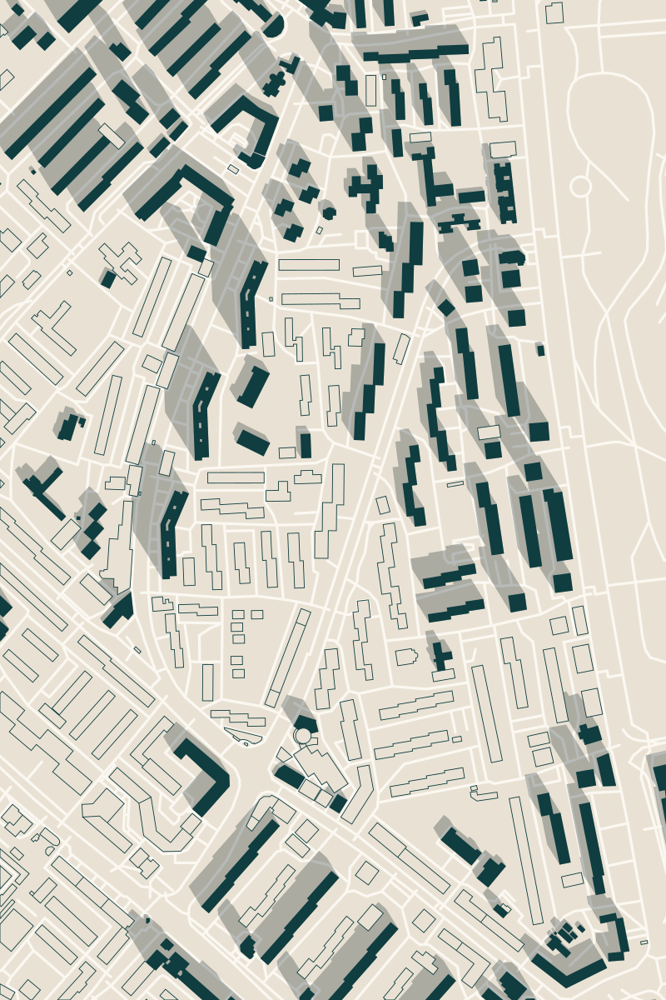
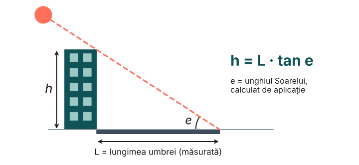
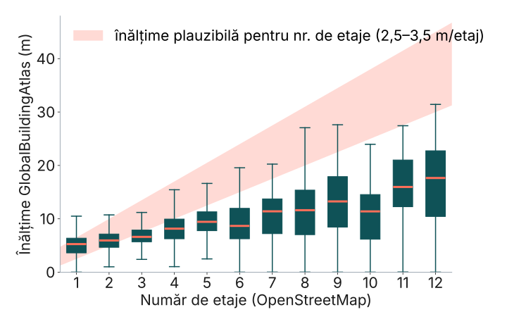
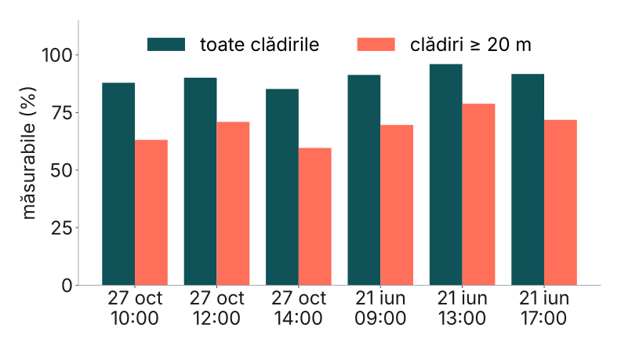

Soarele acestei hărți27 oct 2026, ora 10:00
e = 27,8° · azimut 150°
RoSEF 2026 · Tehnologia Informației și Comunicațiilor
UMBRA
Măsurăm înălțimea clădirilor din umbra lor — ca aplicația să știe unde e umbră pe trotuar.
Eduard-Mihai PerjocLiceul Tehnologic de Marină
Eduard-Andrei HaivasLiceul Internațional de Informatică Constanța
Cezar-Ștefan ManeaLiceul Tehnologic de Electrotehnică și Telecomunicații
01Problema
87,8%
din cele 51.428 de clădiri din Constanța nu au înălțime în OpenStreetMap. Fără înălțime, umbra nu se poate calcula.
înălțime: 0,5%
doar etaje: 11,5%
nimic: 87,8%
GlobalBuildingAtlas (AI din imagini satelitare) acoperă 79% dintre ele. Dar este corect?
02Ideea

Aplicația știe exact unde este Soarele. Măsori doar lungimea umbrei L — înălțimea rezultă din trigonometrie.
03AI-ul global ratează blocurile
1,36 m / etaj
mediana GlobalBuildingAtlas pentru blocurile cu 9–12 etaje (realist: 2,5–3,5 m). Clădirile de 20–40 m ies în medie cu 15,7 m prea joase.

04Umbra se poate măsura
85–90%
dintre clădiri au toamna un vârf de umbră liber de alte clădiri (60–71% pentru cele ≥ 20 m), din 38.913 contururi reale.

Cu telemetrul: eroare sub 1 m la orice oră. Cu GPS: ±3,2 m toamna, dar ±13,2 m vara la amiază → măsori cu Soarele jos.
05Concluzii
- GBA nu poate completa blocurile înalte: le-ar scurta umbrele la jumătate.
- Soarele e un raportor gratuit: eroarea vine aproape numai din lungimea măsurată.
- Urmează: măsurători pe teren (telemetru, dronă) și modul „Măsoară clădirea”.
Fundalul e o hartă reală: Tomis Nord, cu umbrele calculate de Umbra. Doar clădirile pline au înălțime, deci doar ele aruncă umbră.
100 m · scara 1:1000
[1] OpenStreetMap / Geofabrik, 2026 · [2] NOAA, Solar Calculation Details · [3] Zhu et al., GlobalBuildingAtlas, ESSD, 2025 · [4] Meeus, Astronomical Algorithms, 1998